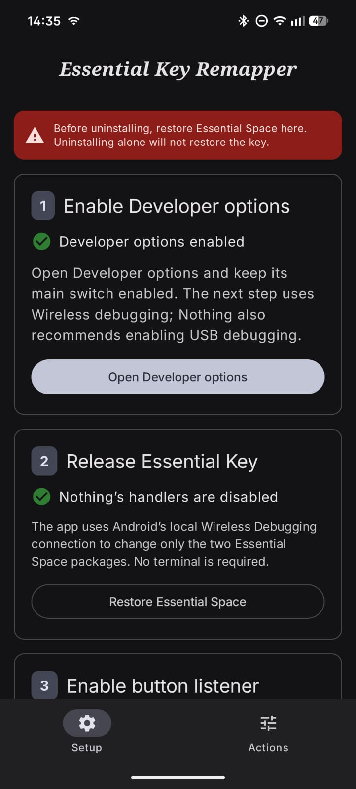
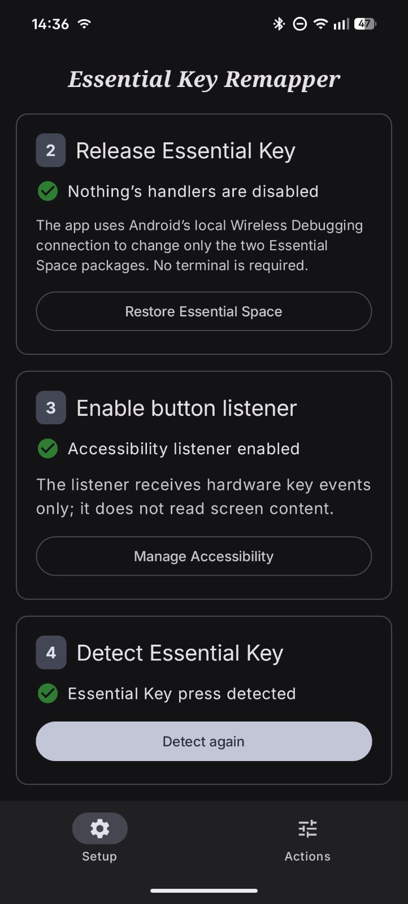

1. Enable Developer Options
On Nothing OS, open About phone → Software info → Build number. Tap Build number seven times, confirm your screen lock if requested, and keep the main Developer Options switch enabled.

2. Release the Essential Key
Nothing OS normally routes the hardware key to Essential Space and Essential Recorder. The app opens Android's Wireless Debugging settings and pairs with the same phone over the local connection.
- Tap Open Wireless debugging setup.
- Enable Wireless Debugging and choose Pair device with pairing code.
- Enter the six-digit pairing code through the app or its setup notification.
- The app runs only the allowlisted package-state commands documented in the open-source repository.
The app disables com.nothing.ntessentialspace and com.nothing.ntessentialrecorder for Android user 0. Their data is not deleted. The Restore action runs the corresponding enable commands.
3. Enable the hardware-button listener
Enable Essential Key button listener in Android Accessibility settings. The service requests hardware key events. It does not process accessibility screen content or type text.
Sideloaded APKs on Android 13 or later may require App info → ⋮ → Allow restricted settings after Android blocks the first enable attempt.
4. Detect and configure the key
Tap Detect, press the Essential Key once, then select separate actions for single, double, and long presses.

Restoring the original behavior
Open the app's Setup page and tap Restore Essential Space. Complete the local Wireless Debugging pairing again if Android requires it, then verify that Nothing's handlers are enabled before uninstalling.